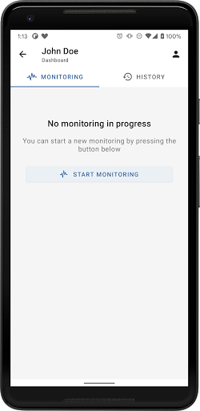
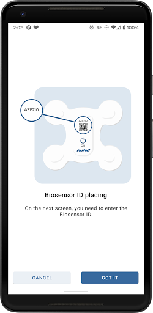

The public iOS app still reflects the older Mawi band era, while Android now reflects the clinical patch workflow.
Elinext mobile teardown for Artem Malynovskyi

Legacy surface
2019
Current traction signal
100+ installs
Public promise
24-hour reports
Public handoff risk
Split domains
What if every Mawi patch setup proved the signal was live?
Mawi already sells the hard part: a biosensor patch, beat-to-beat analysis, and 24-hour reporting. The public mobile gap is the trust layer between "patch applied" and "your care team has the data."
This concept compresses setup, signal-quality proof, cloud relay, symptom capture, and report ETA into one patient-safe flow.
The Android listing is still light on public adoption signal, so first-run confidence matters disproportionately.
The website promises fast reporting and home application. The app should make that handoff feel obvious, not implicit.
The main site points providers to an unresolved `mawivital` login while separate `mawiheart` portals are live.
Public signals
Manual-looking activation
Monitoring state is too quiet
Product story is split
Dashboard handoff looks brittle
Where the trust gap shows up before the algorithm even matters
Review volume is too small to tell a story on its own. The stronger evidence is the shape of the public product surface: manual setup cues, split-era branding, and a thin monitoring-state experience for a clinical workflow.
Android screenshots show a separate biosensor-ID placement step, which implies more patient effort than necessary for a prescribed flow.
The public blank state says "No monitoring in progress" without much reassurance about pairing, upload, or what to do next.
Older consumer iOS language and newer clinical Android language expose two product eras at once.
Public domain behavior suggests the provider, patient, and marketing touchpoints are not yet presented as one coherent system.
Prototype
Prototype response
Step 1 | guided setup
Step 2 | live confidence
Step 3 | care handoff
From "Did it start?" to "Your care team has it."
The concept below does not reinvent Mawi's clinical model. It tightens the patient mobile layer around setup confidence, live monitoring proof, and report handoff.

Current public screen
Monitoring blank state
The current public screenshot is functional but sparse. In a medical workflow, the patient wants more than a start button.

Current public screen
Biosensor ID placement
The setup cue is clear enough, but it still feels like a manual step instead of a confidence-building onboarding path.
This concept solves for the moments most likely to create support tickets or patient doubt.
- Scan the patch instead of matching IDs by sight.
- Run preflight checks before monitoring starts.
- Keep signal quality, upload status, and wear time visible.
- Expose the report ETA and care-team next step in the same timeline.
8:54
LTE • 100%
Patch activation
Scan patch and clear preflight
Patients get one clear path: scan, confirm placement, verify signal, and begin monitoring.
Mawi Biosensor patch
Prescription linked to Dr. Novak. Wear goal: 5 days.
QR
Scan patch label
Auto-matches biosensor ID and activation order.
- Skin placement guide confirms correct patch orientation.
- Bluetooth, internet, and battery preflight run automatically.
- Signal preview confirms the first clean beat before the patient leaves the screen.
Placement guide
Start monitoring
8:56
Relay live
Monitoring in progress
Show the patient the data is moving
Instead of a thin monitoring state, the app explains signal health, upload status, wear time, and symptom capture.
Signal quality
Stable chest contact over the last 10 min
Patch paired
Confirmed 8:55 AM
Cloud relay
Last sync 24 sec ago
Wear time remaining
4d 22h
Escalation trigger
Auto-alert if signal drops 5 min
Quick patient actions
- Log dizziness, palpitations, or chest discomfort with one tap.
- See whether the event marker reached the active session.
- Get plain-language recovery steps if contact quality drops.
Add symptom
Message support
9:02
Report ETA
Care timeline
Make the 24-hour promise visible
The patient sees what happens next, who owns it, and when to expect the report or follow-up.
Current study
ETA: report by 2:00 PM tomorrow
- Patch activated Paired successfully and linked to the active order.
- Cloud relay stable Data received continuously with no signal gaps over 2 hours.
- Technician review queued Certified review begins automatically after wear completion.
- Provider notified Final report will appear in the provider portal and summary message.
Need help before the report?
Patients can escalate patch issues, low-signal warnings, or symptoms without leaving the study context.
Study details
Contact care team
Why this is a fit
Better data entering the platform
Lower-risk mobile work
Clear operational benefit
The pitch matches Artem's architecture lens, not just the UI layer
This is a mobile trust improvement for a device-agnostic ECG platform. It supports the backend, the ML workflow, and the clinical handoff instead of competing with them.
Cleaner setup and clearer relay status reduce false starts, support noise, and ambiguous study sessions before they hit the analysis pipeline.
The concept is a focused patient workflow upgrade, not a platform rewrite. That makes it realistic for an external mobile delivery team.
Patients, technicians, and providers all benefit when the app can prove the patch is live and the report process has actually started.
Closing angle
What we would tighten first
Why it matters commercially
A stronger patient trust layer is the fastest way to make Mawi's clinical promise feel real on mobile
Elinext can help build this without forcing Mawi off its current platform direction: native or cross-platform mobile delivery, onboarding diagnostics, signal-state UX, and reliability-focused implementation.
Activation flow, signal diagnostics, relay confidence, symptom capture, and the report-handoff timeline.
When public adoption signals are still light, each onboarding session is a trust-building moment. In MedTech, that compounds fast.